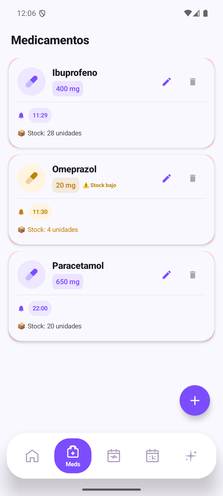
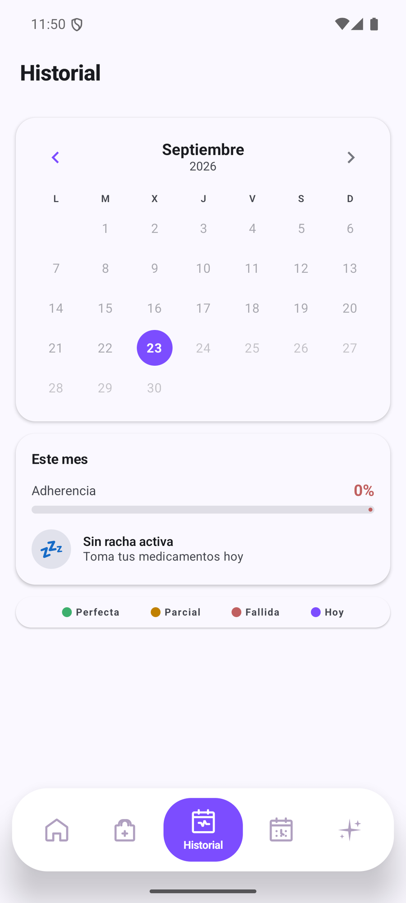
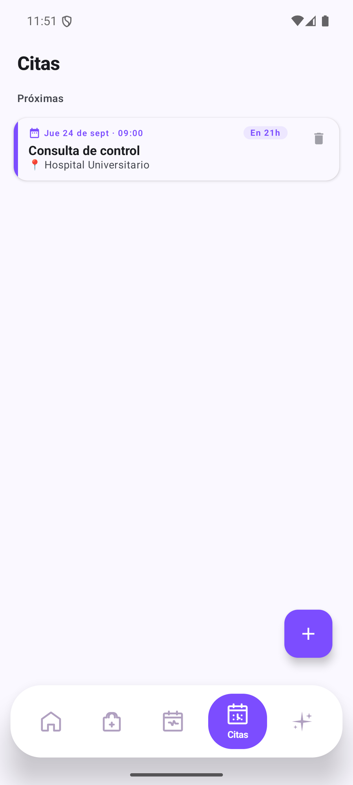

JassTrack
Control de medicación con aviso al cuidador, stock y asistente IA.
Aplicaciones, automatización y proyectos con IA, construidos de principio a fin sobre infraestructura propia. Rápido, cuidado y en producción.
Control de medicación con aviso al cuidador, stock y asistente IA.
Alertas de Vinted y Wallapop con control de precios y traducción.

La Quiniela, La Porra y La Puja con cuentas, puntos y primas.
Cada proyecto comparte la misma base: infraestructura propia, IA y datos en vivo.
Alertas y avisos al instante, con traducción automática y cero ruido.
Paneles con datos en vivo: valores, puntos, estado y tendencias.
 Web oficial · VPS
Web oficial · VPS EduDownloader · PC
EduDownloader · PC

Primeros proyectos propios y aprendizaje de IA.
Aplicaciones Android y bots de automatización.
Ecosistema completo: web, juegos y apps en producción.
Aplicaciones (Android y escritorio), webs, bots de Telegram y automatizaciones, del concepto al despliegue.
Definimos objetivo y alcance, y a partir de ahí diseño, desarrollo y puesta en producción.
Sí, con los modelos más avanzados (Claude, Gemini, DeepSeek), siempre con criterio propio y control del resultado.
En la sección de demos tienes capturas reales paso a paso de JassTrack y TrackerEdu.
Sí. Los proyectos que ves están creados y en marcha, no son maquetas.
Aplicaciones, automatización e IA de principio a fin.
